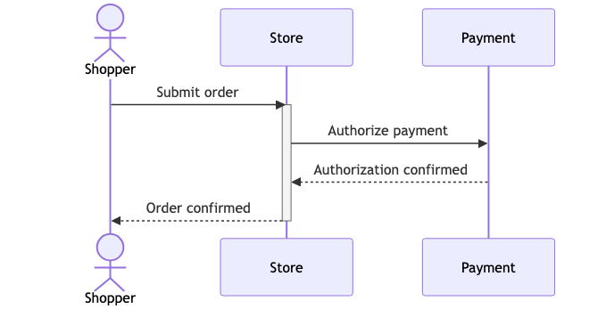

Outcome gallery
PTLam Visualization — Test Artifact Gallery
Review the skill through concrete outputs: a narrative HTML report, five Mermaid delivery formats, and a combined HTML + Mermaid page. Open this gallery through its local HTTP review URL so browser PDF security does not block the relative PDF link.
Coverage at a glance
Route, version, and status matrix
“Validated” means the route-owned deterministic check passed. Browser evidence is named separately; an unexecuted browser is never counted as passed.
| Case | Route | Primary format | Pinned runtime | Status | Remaining coverage |
|---|---|---|---|---|---|
| Atlas release review | HTML | HTML | Not invoked | Static + Chromium QA passed | Edge, Firefox, and Safari not executed; default-browser identity unverified |
| Release readiness flow | Mermaid | SVG | Mermaid/CLI 11.16.0; Chrome 151.0.7922.47 | Validated | Standalone visual review available below |
| Checkout exchange | Mermaid | PNG | Mermaid/CLI 11.16.0; Chrome 151.0.7922.47 | Validated | Raster output has no embedded text alternative |
| Job lifecycle | Mermaid | Mermaid/CLI 11.16.0; Chrome 151.0.7922.47 | Validated | Use the loopback HTTP gallery; direct file:// PDF navigation may be blocked | |
| Release flow source | Mermaid | Native Mermaid Markdown | Mermaid/CLI 11.16.0; Chrome 151.0.7922.47 | Parse + render passed | Consumer hosts may run a different Mermaid version |
| Service architecture | Mermaid | Markdown + SVG | Mermaid/CLI 11.16.0; Chrome 151.0.7922.47 | Validated with beta warning | architecture-beta is beta in Mermaid 11.16.0 |
| Pinned runtime explainer | Combined | HTML | Mermaid/CLI 11.16.0; Chrome 151.0.7922.47 | Validated after case-local fix | Candidate does not yet guarantee cross-SVG ID isolation; non-Chromium targets remain unexecuted |
Exact capsule identity
7e9e2e4f7e1de7c1fa4adb5610e20bd940830d22a530638489f52a63f711d581
This identity binds Mermaid 11.16.0, Mermaid CLI 11.16.0, and Chromium 151.0.7922.47.
Primary review set
Deliverables
These are the files intended for human review. Each preview is followed by a direct local link.
HTML
Release readiness review
A dense, interactive gate review with search, status filtering, theme switching, evidence labels, and a no-release recommendation.
html-case/release-readiness-review.html
SVG
Release readiness flow
An accessible flowchart with a title, description, graphics role, and ARIA relationships embedded in the SVG.

mermaid-cases/release-flow.svg
{kind=link}
PNG
Checkout authorization exchange
A sequence diagram rendered as a compact 679 × 347 raster image for image-first delivery.

mermaid-cases/checkout-sequence.png
{kind=link}
Background job lifecycle
A tagged, single-page state diagram suitable for standalone printing and page-bounds review. Open it from this HTTP-served gallery rather than a file:// URL.
mermaid-cases/job-lifecycle.pdf
NATIVE MERMAID MARKDOWN
Release flow source block
A Markdown document whose primary content is a real fenced mermaid block. This is the route for Mermaid-aware Markdown hosts, distinct from static Markdown that links to a rendered SVG.
```mermaid
---
config:
deterministicIds: true
deterministicIDSeed: ptlam-mermaid-cases-release-flow
---
flowchart LR
accTitle: Release readiness flow
accDescr: A candidate passes validation and review before release, while failures return to revision.
candidate[Candidate] --> validate{Validation passes?}
validate -->|No| revise[Revise]
revise --> validate
validate -->|Yes| review[Human review]
review --> approve{Approved?}
approve -->|No| revise
approve -->|Yes| release[Release]
```mermaid-cases/release-flow-native.md
MARKDOWN + SVG
Document processing architecture
A Markdown image reference plus its accessible SVG asset. The source uses Mermaid’s architecture-beta syntax.

mermaid-cases/service-architecture.md
mermaid-cases/architecture-assets/service-architecture.svg
{kind=link}
COMBINED HTML + MERMAID
Pinned runtime explainer
A portable page with two pre-rendered accessible SVG diagrams and one inert canonical Mermaid source record per diagram. Its test builder namespaces SVG IDs before assembly; that protection is not yet owned by the candidate skill helper.
combined-case/ptlam-visualization-combined-runtime.html
Material warning
Architecture diagrams are beta in the pinned Mermaid release
The Markdown case validates and renders successfully, but Mermaid 11.16.0 classifies architecture-beta as beta. Treat syntax and layout stability as lower than the stable flowchart, sequence, and state families.
Skill review finding
Multi-diagram SVG IDs can collide in combined HTML
The first combined build placed two Mermaid SVGs with reused page-global IDs into one document. That can break CSS selectors, ARIA references, gradients, and marker references. The review artifact was repaired by namespacing every SVG ID and rewriting CSS, ARIA, and marker references before assembly.
Candidate gap: this is a case-local repair, not a guarantee provided by the current skill. The combined workflow/helper should own collision-safe namespacing, or the validator should reject cross-SVG duplicate IDs.
Supporting material
QA evidence and intermediates are not deliverables
This tracked result intentionally contains only the gallery and its eight review deliverables.
Canonical .mmd inputs, transformation plans, browser drivers, screenshots, and other temporary QA evidence remain outside Git. Their executed results are summarized in the matrix and coverage boundary above.
Coverage boundary
What remains unverified
- Edge, Firefox, and Safari were not executed for these HTML review cases.
- The system default browser opened successfully for the HTML-only case, but its identity was not exposed.
- PNG carries pixels only; accessibility depends on the surrounding alt text or another requested text channel.
- Inline PDF preview support depends on the browser. This review bundle serves the direct PDF over loopback HTTP because Comet may block direct
file://PDF navigation. - Native Mermaid Markdown was tested with 11.16.0; a consumer host using another Mermaid version can render it differently.
- This gallery reports existing case evidence and does not convert an unexecuted check into a pass.